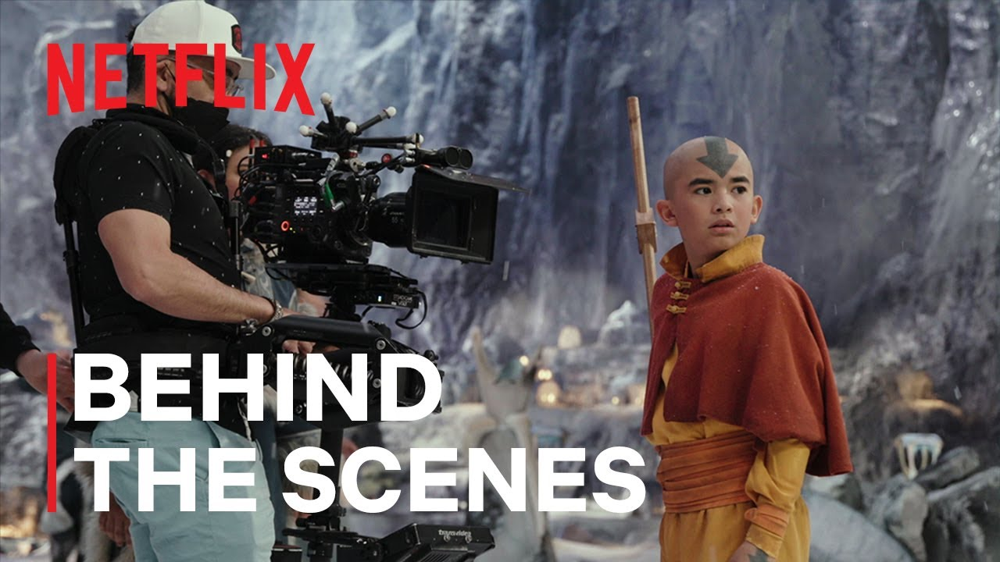
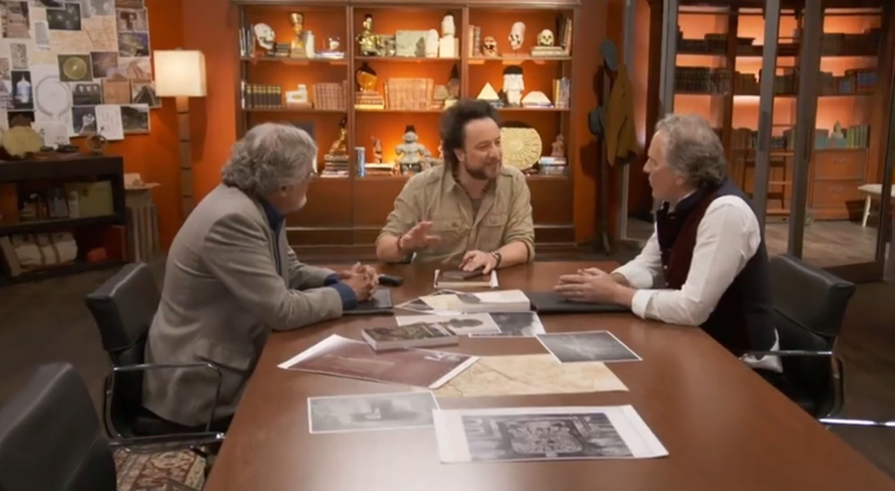

Behind the Scenes: Avatar the Last Airbender
Avatar: The Last Airbender | The Art of Bending | Netflix See how the director, crew and casts talks about the concepts behind the project.
Ancient Aliens Documentaries
Ancient Alients is one of the most interesting documentaries around in terms of presentaion. Check out how they do transitions from narrator to interviews. See how the interviews are done. See how narrator or interview audio clips are used as voice overs to video clips.